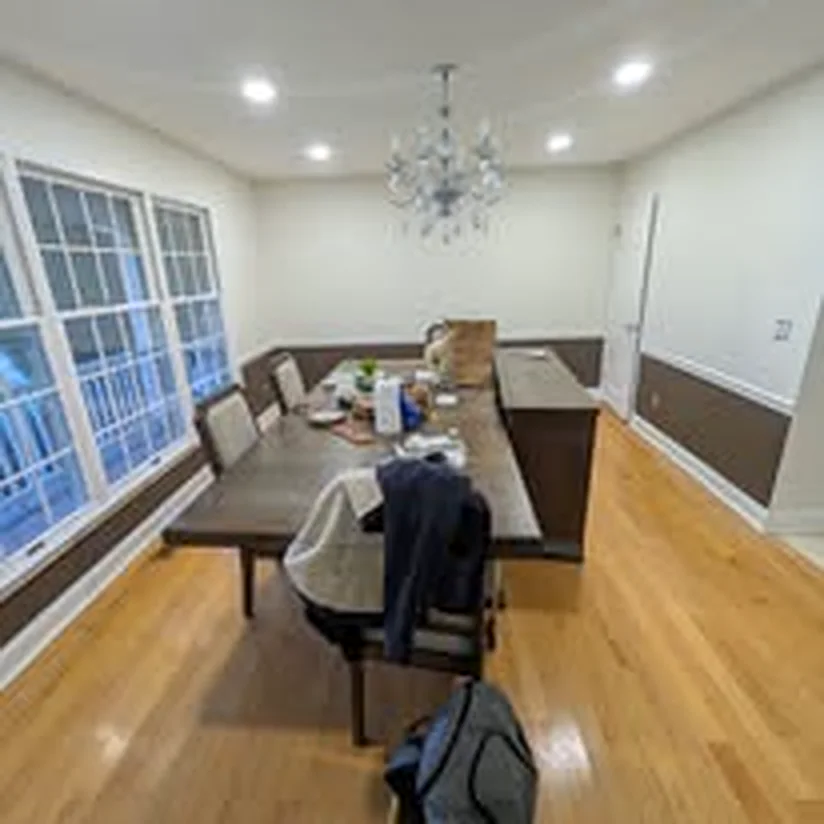

Deck Staining
Backyard decks in Parlin and Morgan.
Interior painting, exterior painting, drywall repair, and deck staining in Sayreville — direct owner service from nearby Carteret.
Sayreville stretches from the Raritan Bay waterfront to inland suburbs — flood-zone homes near Morgan need moisture-smart primers; Parlin splits need standard suburban prep. Sal's Painting serves Sayreville for interior repaints, exterior jobs, and deck staining on backyard outdoor living spaces.
Waterfront sections need mildew-aware washing on exteriors. Inland Parlin homes follow typical split-level repaint patterns with deck staining in spring. Sal plans prep, access, and materials for the way Sayreville homes are actually built — not a one-size template from out of county.
Call (727) 644-7674 for Sayreville scheduling or send a quote request.
Sayreville stretches from Raritan Bay waterfront to inland Parlin suburbs. Flood-zone homes near Morgan need moisture-smart primers; inland splits follow standard suburban prep. Sal paints all Sayreville sections from nearby Carteret.
Room and whole-home repaints in Parlin and Sayreville proper — including finished basements after moisture checks. Sal won't coat over active water issues without addressing the source first.

Backyard decks in Parlin and Morgan are popular spring scopes — wash, dry, prep gray wood, and apply penetrating or solid stain. Bay-facing exterior elevations need mildew-aware washing before paint.
Surface repair and repaint yes after dry leaks; active plumbing must be fixed first. Post-renovation punch lists pair with finish painting when other trades are done.
Typically 15–25 minutes from Charles St depending on section. Neighbors: South Amboy, Edison, Perth Amboy. Gallery · Costs.
Backyard decks in Parlin and Morgan.
Humidity-exposed elevations.
Splits, ranches, and basements.
Single rooms, whole homes, exteriors, and deck scopes are quoted after walkthrough or photos. See the Middlesex County painting price guide for ballparks, then call Sal for a written Sayreville quote tied to your actual prep needs.
Owner-operated from Carteret since 2015 — direct contact, free estimates, protected floors, and a workmanship guarantee. Browse the project gallery for interior, exterior, trim, and deck work across Middlesex County.
Sayreville painting FAQ
Nearby areas
Based in Carteret and serving Sayreville, South Amboy, Edison, Perth Amboy, and communities across Middlesex County. See all service areas →
Get your quote
Interior, exterior, drywall, and deck work across Middlesex County.
(727) 644-7674